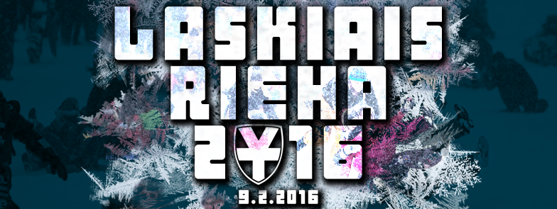
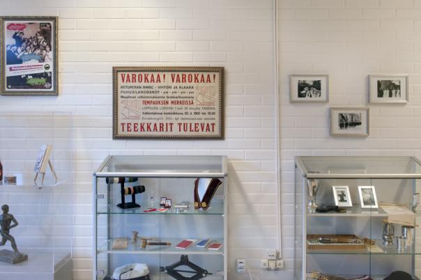
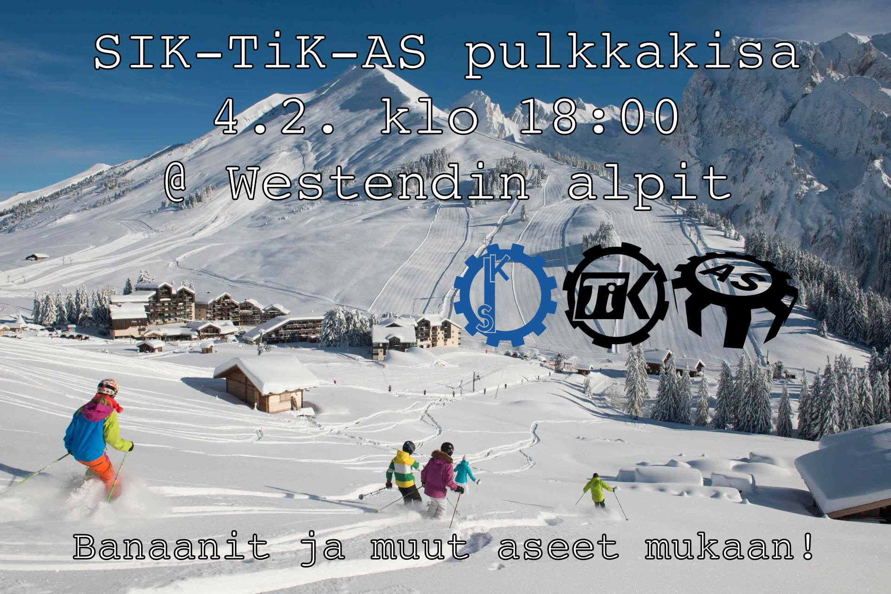

Waarin viikkotiedote 4/2016 -
25.01.2016 fuksit / viikkotiedote / waarin wartit / vappupokemon / laskiaisrieha /
<3 ultsi
Sisällysluettelo
- Tärkeää
- Tarkastetut fuksipistekortit voi hakea kiltikseltä!
- Tempaus!
- Fuksi- ja kiltatapahtumat
- Laskiaisriehan laskuvälinen alkupamaus - ti 26.1.
- Seuraava Polyteekkarimuseovierailu - ma 1.2.
- SIK+TiK+AS pulkkakisa - ti 4.2.
- Laskiaisrieha - ti 9.2.
- Gravitaatio - ti 9.2.
- Muistinnollaus 11110 - Pe 12.2. - La 13.2.
- KY-Speksi 2016 esittää: Messias-protokolla - 19.2.
- Humanistispeksi 2016: Metsä - 26.2.
- Lajikokeilu: Curling - to 3.3.
- AYY & Muu
- Teekkaripurjehtijoiden Infoilta - ke 27.1
- Finnish Game Jam Otaniemi - Pe 29.1. - La 31.1.
- Pyöränhuoltopisteet Otaniemen ja Töölön kampuksille
- Vappupokemon!
Tärkeää
1. Tarkastetut fuksipistekortit voi hakea kiltikseltä
Fuksipistekortteja on vielä aimo kasa kiltiksellä! Käykää hakemassa omanne pois! Kortit löytyvät TV-tason päältä harmaasta Mac-pöntöstä. :)
2. Tempaus!
Pitkän hiljaiselon jälkeen on taas tulossa uusi Tempaus (isolla T:llä!). http://www.tempaus.fi
Mikä on Tempaus?
Tempaukset ovat opiskelijoiden tapa vaikuttaa ajankohtaisiin asioihin pilke silmäkulmassa, mutta kuitenkin tosissaan. Joukkovoimaa hyödyntäen tempauksissa herätetään suuren yleisön mielenkiinto johonkin yleiseen ongelmaan. Tempauksilla saatetaan myös kerätä rahaa johonkin yleishyödylliseen tarkoitukseen. Historia tuntee monia hyvin onnistuneita ja paljon julkisuutta saaneita tempauksia, mutta myös pienempiä, joka vuosi järjestettäviä tempauksia.
Viimeksi Tempaus järjestettiin Aalto-yliopiston syntyessä vuonna 2009, jolloin Tempauksen nimi oli “Mahtavaa! Ihanaa! Räjähtää!” (tuttavallisemmin MIR). Tällöin opiskelijat muodostivat ihmisketjun Otaniemestä aina Helsingin Arabiaan asti ja toivat uudelle yliopistolle positiivista näkyvyyttä Helsingissä.
Eräs kuuluisimmista Tempauksista järjestettiin vuonna 1966, kun korkeakoulu muutti viimein Helsingistä Otaniemeen - tapaus tunnettiin nimellä “Temppu-66”. Tapahtumaan sisältyi monia erilaisten pienempiä tapahtumasarjoja kuten Hajajäyniä, esityksiä ja karnevaaleja, mutta suurin näkyvyys saavutettiin massiivisella kulkueella Helsingin läpi kohti Otaniemeä. Video: http://yle.fi/aihe/artikkeli/2006/11/08/opiskelijatempaus-korkeakoulu-otaniemeen
Muita Tempauksia ovat esimerkiksi vuoden -79 “Tutki tai tutise!” (teknillisen tutkimiuksen edistämisen puolesta) ja -60 “Vienti turvaa tuotannon” (suomalaisen teollisen viennin puolestapuhuminen).
Miten minä voin vaikuttaa?
Kaikki tempaukset ovat vaatineet paljon tekijöitä, ja niin myös tälläkin kertaa. On äärimmäisen tärkeää, että myös fukseja lähtee tempaustoimikuntaan mukaan. Seuraava kerta temmata voi olla kaukana tulevaisuudessa, viime tempauksestakin on jo 7 vuotta aikaa. Voit nyt päästä osaksi historiaa vaikuttamalla Tempaukseen 2016 ilmoittautumalla vapaaehtoiseksi!
Töitä riittää pitkin kevättä, eivätkä ne myöskään lopu wappuun (mikäli sellainen päätetään järjestää). Tilaisuuteen kannattaa ehdottomasti tarttua, vaikka fuksikevät ja mahdollinen wappu on tulossa. Huomatkaa, että ilmoittautumislomakkeessa voi mainita aikataulurajoitteet. :)
Nyt mennään eikä meinata. Tästä vuodesta on tulossa ihan huikea, voin aistia sen jo tuntosarvillani. Muistakaa, että tämä tempaus ei ole pelkästään teekkarien juttu - tänä vuonna temmataan kauppatieteiden ja taiteiden opiskelijoiden kanssa! Siitä lisää myöhemmin...
Kaikki tulee selviämään aikanaan, sitä ennen kannattaa suunnata sivulle http://www.tempaus.fi.
Osallistumisesta luvassa KAKSI FUKSIPISTETTÄ:
Fuksi- ja kiltatapahtumat
1. Laskiaisriehan laskuvälineen alkupamaus

Tiistaina 26.1. aloitetaan Laskiaisriehan laskuvälineen rakennus täyttä vauhtia! Aloitetaan suunnittelu nopealla kokouksella kiltiksellä klo 16:00, jonka jälkeen käydään raivaamassa Otaniemen roskalavat ja varmaan myös oma Otatarhan ajokki sopivien osien varalta. Ajokin kasaaminen tapahtuu Gorsulla, jossa on myös ruokaa ja juomaa asentajille. Laskuvälinettä voidaan testata Rantasaunan mäessä.
Tehdään heti alusta lähtien isosti & asenteella ja voitetaan koko kisa, eiks vain?
Facebook: https://www.facebook.com/events/891389037634920/
2. Seuraava Polyteekkarimuseovierailu - ma 1.2.

Maanantaina 1.2. on seuraava vierailu Polyteekkarimuseolla! Osoitteessa Jämeräntaival 3 sijaitseva Polyteekkarimuseo on Suomen ainoa opiskelijakulttuuria esittelevä museo, ja siellä ohjatun kierroksen käyminen on yksi pakollinen osa lakinsaantia. Museovierailulla pääset kuulemaan teekkarien yli 140 vuotiaasta historiasta ja näkemään mm. teekkarilakin yli 110-vuotisen kehityksen. Teekkarin on hyvä tietää historiansa, ja museo on mitä parhain paikka sen opetteluun.
Jotta kierros voidaan järjestää, täytyy sinne ilmoittautua etukäteen, jotta opas ei tule turhaan paikalle. Kierroksilla on vapaana 15 paikkaa. Kierros kestää noin tunnin ja siellä on hyvä olla paikalla noin 5 minuuttia etukäteen. Ilmoittaudu nyt!
Ajat:
Ma 1.2. klo 18:00 - http://tietokilta.fi/tapahtumat/ilmot/museokierros2
Seuraava aika tulossa ensi viikolla.
3. SIK+TiK+AS pulkkakisa - ti 4.2.

On aika kaivaa jo pölyttyneet laskuvälineet esiin varastosta ja syödä sieniä, sillä tämä on pulkkailua á la Mario Kart! Torstaina 4.2. SIK, TiK ja AS mittelöivät hurjassa alamäkitaistossa, jossa vain parhaiten banaaneilla, ohjautuvilla kilvillä sekä muilla pommeilla varustettu kilpailija voi voittaa. Kilpailu tulee olemaan raakaa. Mukaan saa ja kannattaa myös tulla vain laskemaan!
Kisan jälkeen pääsemme parantelemaan kilpailussa syntyneitä haavoja ja mustelmia Rantasaunan paljun lämpöön sekä syömään ja juomaan hyvin.
Eli nappaa laskuväline ja pommisi mukaan torstaina 4.2. ja saavu klo 18:00 paikalle Westendin alpeille (Westendintie 100) kisaamaan vuoden Mario Sled -tittelistä!
Facebook: https://www.facebook.com/events/678296662272888/
4. Laskiaisrieha - ti 9.2.
Laskiaistiistaina 9.2.2016 koittaa Helsingin Kaivopuistossa opiskelijoiden kevättalven piristys, Ullanlinnanmäen Laskiaisrieha! Lystikkään, lumisen ja vauhdikkaan iltapäivän ajan mäki täyttyy kelkoista, pulkista, liukureista ja niitä ohjastavista iloisista opiskelijoista pääkaupunkiseudulta ja kauempaa. Pulkka kainaloon ja eikun mukaan mäkeen!
Vapaan laskemisen ja lystinpidon ohella tiedossa on musiikkia, kilpailuja ja päheätä ohjelmaa. Päivän kruunaa legendaarinen ABB:n Akateeminen mäenlaskukilpailu, jossa joukkueet kisaavat toinen toistaan kekseliäämmillä ja näyttävämmillä rakennelmilla Laskiaisen huikeimman mäenlaskuvälineen tittelistä. Aikaisempina vuosina rinteessä on nähty junia, autoja, hävittäjiä, tankkeja sekä Lohikäärmeen kuolema ja onpa mäki laskettu myös alhaalta ylöskin; tule mukaan seuraamaan kuka vie skaban tällä kertaa!
Jos taas vasara pysyy kädessä ja kelkka ohjaksissa, kokoa oma joukkue suunnittelupöydän ääreen ja ilmoittaudu mukaan. Hurmaa yleisö sekä vie palkinnot kotiin, ja ennen kaikkea pidä hauskaa! Säännöt ja ilmoittautumisohjeet löytyvät osoitteesta http://www.laskiaisrieha.fi
Paras tunnelma mäessä on klo 13-17 välillä ja meininki jatkuu vahvana Helsingin yöelämässä Gravitaatio-bileissä The Circuksessa! Tsekkaa http://gravitaatio.fi/
Riehassa mukana ABB, TEK, Sonera X, Tikkurila Festivaali, ED, Sweco, Posti ja AYY!
Jos yhdistyksesi haluaa mukaan tai käyttää telttapaikkaa Laskiaisriehassa (mikä on siis erittäin suotavaa!), otathan meihin yhteyttä sähköpostilla: info@laskiaisrieha.fi
PS. Parannetaan maailmaa ja laitetaan Ulliksella roskat roskikseen. Kiitos!
5. Gravitaatio - 9.2.
Facebook: https://www.facebook.com/events/216815505325545/
Gravitaatio laskeutuu keskuuteemme! Alkuvuoden suurimmat poikkitieteelliset pippalot juhlitaan laskiaistiistaina 9.2.!
The Circuksessa järjestettävä Gravitaatio toimii Ullanlinnanmäen Laskiaisriehan https://www.facebook.com/events/891389037634920/ virallisina jatkoina. Saavu siis päivällä pulkka kainalossa ja mieli raikkaana Ullikselle! Laskujen jälkeen lämpö jäseniin palaa nopeiten The Circuksessa, jossa laskiaiskansan tanssittamisesta huolehtivat:
TIISU
UNIKLUBI
Bileiden menossa mukana myös Julkku, Jäynä, VT ja RWBK!
Mitä: Gravitaatio 2016
Missä: The Circus
Milloin: Laskiaistiistaina 9.2.
Miten: Lippu etukäteen 13€. Ovelta 15€
Miksi: Alkuvuoden suurimmat opiskelijabileet, riehakas meno, loistavat esiintyjät ja helmikuun kovin juhlapäivä!
HUOM! Tapahtuma on K-18
Alustavat lipunmyyntiajat:
@Kandidaattikeskus, Alvarin aulassa 1.2., 3.2., 5.2. klo 10-14, sekä 9.2. klo 10-12
@Kandidaattikeskus, U-siipi 2.2. ja 4.2. klo 10-14
@Lääkis (Haartmaninkatu 3), Meilahti 1.2. klo 10-14
@Viikki (Biokeskus 1) 2.2. ja 8.2. klo 10-14
@Porthania 3.2. klo 10-14
@Arabia, Kipsari 4.2. klo 11-13
@Kumpula (Physicum) 5.2. klo 10-14
@Laskiaisrieha (Ullanlinnanmäki) 9.2. klo 13-16
sekä korttimaksulla AYY:n Otaniemen palvelupisteellä 1.2.-9.2. sen aukioloaikoina
Yöllä viimeinen 102T klo 1:50 Otaniemeen kulkee kahden auton voimin (toinen lähtee linjan 103 laiturilta). The Circukselta lähtee myös yöllä ilmaisia bussikuljteuksia Otaniemeen. Niiden lähtöajat varmistuvat myöhemmin
Katso myös:
http://www.laskiaisrieha.fi
http://www.gravitaatio.fi
6. Muistinnollaus 11110 - Pe 12.2. - La 13.2.
Juhlimme killan 30-vuotista taivalta ravintola Valopihalla. Luvassa on killan vuosikymmenen parhaat juhlat, joten tule juhlimaan muiden kiltalaisten kanssa! Lisätietoja löydät osoitteesta http://tietokilta.fi/muistinnollaus/etusivu
6. KY-Speksi 2016 esittää: Messias-protokolla - 19.2.
Maailmanpoliittinen tilanne on kärjistynyt, ja ihmiskunta on suuren sodan partaalla. Megakorporaatio Syndikanssin tutkimuskeskuksessa kehitetty supertietokone PASI ottaa tehtäväkseen varmistaa ihmisrodun jatkuvuus. Hän käynnistää projektin, jonka avainhenkilöt pakastetaan pahan päivän varalle. Kun maailmanloppu lopulta tulee, on aika sulattaa pakasteet, saattaa projekti päätökseen ja pelastaa sodasta selviytyneet ihmiset.
Lisätietoja: http://kyspeksi.fi/2016/
Facebook: https://www.facebook.com/kyspeksi/
Ilmoittautumiseen: http://tietokilta.fi/tapahtumat/ilmot/kyspeksi16
7. Humanistispeksi 2016: Metsä - 26.2.
On kevät 1918. Valkoisten ja punaisten välinen sota on tunkeutunut metsän syvyyksiin, jonka henget alkavat muuttua levottomiksi. Öisen metsän valtias Pöllö seuraa ihmisten liikkeitä ja hänen kärsivällisyytensä on käymässä vähiin.
Elias on vastentahtoisesti keskeyttänyt opintonsa liittyäkseen valkoisten joukkoihin tietämättä lapsuudenystävänsä taistelevan vastakkaisella puolella. Mitä tapahtuu, kun sota tuo ystävykset jälleen kasvokkain? Selviävätkö sotilaat myyttisen Näkin viettelyksestä? Kuinka Yön valtiaan käy kevään valon voittaessa talven pimeyden?
Lipun hinnaksi tulee 13€.
Lisätietoja: http://humanistispeksi.fi/
Facebook: https://www.facebook.com/humanistispeksi/
Ilmoittautumiseen: http://tietokilta.fi/tapahtumat/ilmot/humanistispeksi16
8. Curling 3.3.2016 - ilmo auki
Määris nänniin!
On vuosi 2006 ja talviolympialaiset, joissa suomalaisille täysin uusi laji, curling, nostaa päätään Suomen oman Messiaan, Markku Uusipaavalniemen, johdolla. Uusipaavalniemi (kavereiden kesken Uusis) nappaakin Suomelle hopeaa, ja kansa on haltioissaan. Valitettavasti siihen loppuukin suomalainen menestys curlingissa, ja Uusis katoaa maailmankartalta.
Tietokillan varapuheenjohtaja, tunnettu salapoliisi, on saanut kuitenkin selvitettyä, että mies lymyilee nykyään Oulunkylässä ja pyörittää edellä mainittuun lajiin sekä tietenkin henkilökulttiinsa perustuvaa liiketoimintaa, nimittäin curlinghallia. Tällaista tilaisuutta ei voi jättää käyttämättä, vaan pakkohan tuota mystistä lajia on testata.
2 tunnin setti sisältää lajiesittelyn, pakollisen opastuksen sekä peliaikaa muutamaan päätyyn. Hinnaksi tulee osallistujamäärästä riippuen noin 15-24€. Lajikokeilu on tarkoitus järjestää 3.3.2016 Oulunkylän curlinghallilla. Bonuksena kisapaikalle saa tuoda omia virvokkeita (myös alkoholipitoisia!) ja niitä saa juoda pelin lomassa.
Aika löytää sisäinen curlaajasi!
DISCLAIMER: Emme voi taata, että Uusipaavalniemi tulisi ohjastamaan meitä, hallilla on muitakin töissä.
MITÄ: Heitellään kiviä nänniin, kansankielisesti curlingia
MISSÄ: Oulunkylän curlinghalli, Käskynhaltijantie 11 00640 Helsinki
MILLOIN: 3.3.2016 klo 19-21
PALJONKO: 15-24€, riippuu osallistujamäärästä
Ilmottautuminen alkaa torstaina 14.1! Varmista paikkasi tästä ainutlaatuisesta tapahtumasta: http://tietokilta.fi/tapahtumat/ilmot/curling16
9. Teekkarispeksi 2016: Atlantis 1860 - 18.4.
Killan tukema yhteistilaus 18.4. näytökseen.
Lähde Teekkarispeksin mukana Britannian rannikolle 1860-luvulle. Eristyneellä saarella asuvassa kyläyhteisössä pelätään Jumalaa, haaveillaan Lontoosta ja rakennetaan rautatiesiltaa mantereelle. Kyläyhteisön rauha alkaa rakoilla, kun mystisiin oppeihin vihkiytynyt madame Blavatsky saapuu saarelle ja nostattaa Atlantis-hurmoksen. Kenen usko on oikea? Kuka jää ja kuka lähtee? Löytyykö myyttinen Atlantis?
Milloin: 18.4.2016 klo 18.30
Missä: Aleksanterin teatterissa, Albertinkatu 32
Hinta: 10€
Lisätietoja: http://teekkarispeksi.fi Facebook: http://www.facebook.com/teekkarispeksi/
Ilmoittautumiseen: https://tietokilta.fi/tapahtumat/ilmot/teekkarispeksi16
AYY & Muu
1. Teekkaripurjehtijoiden Infoilta - ke 27.1
Pidätkö raikkaasta meri-ilmasta, yhdessä tekemisestä ja haluatko oppia jotain uutta ja todella hauskaa? Silloin sinun kannattaa tutustua purjehdukseen! Purjehdus on suolapärskeitä, haasteita ja vauhtia, mutta myös upeita auringonlaskuja, chilliä menoa ja rantasaunoja. Sen parista löytyy taatusti jokaiselle jotakin.
Paras tapa päästä alkuun on tulla tutustumaan Teekkaripurjehtijoiden toimintaan. Ke 27.1 klo 17 Otaniemen Ossinsaunalla järjestettävässä infoillassa kerrotaan talven ja kevään aikana järjestettävistä tapahtumista, kursseista, talkoista ja tietysti kesän tulevista purjehdusreissuista. Tarjolla on ruokaa ja juomaa ja saunakin lämpiää.
Olit sitten jo kokenut merikarhu tai vasta purjehduksen saloista vienosti kiinnostunut, olet tervetullut! Kutsu myös kaverisi mukaan. Lysti ei maksa mitään, mukaan tarvitset vain meriseikkailuille avoimen mielen ja halutessasi saunakamppeet.
Linkki Facebook-tapahtumaan: https://www.facebook.com/events/550627041753628/
2. Finnish Game Jam Otaniemi - Pe 29.1. - La 31.1.
Interested in game development, design or concepting? Want to create awesome game project over a weekend with great people? DOT ry and Aaltoes are organizing a Finnish Game Jam site as part of the Global Game Jam.
A Game Jam brings together all types of game developers and designers, amateur, professional and students. Typically participants work in small teams, racing to produce as complete a game as possible with limited time and resources. Join with your friends or just by yourself, team formation will happen on the spot.
GET YOUR FREE TICKETS NOW:
https://www.eventbrite.com/e/fgj-otaniemi-tickets-19937661081
https://www.facebook.com/events/457693784438615/
3. Pyöränhuoltopisteet Otaniemen ja Töölön kampuksille
Aalto-yliopisto on hankkinut loppuvuodesta kampuksilleen kaksi kiinteää BFIX-huoltotelinettä. Telineet sisältävät pyörän huoltoon tarvittavat välineet – pumpun, huoltotelineen ja työkalut –, sekä QR-koodin mobiilioppaaseen. Huoltopisteen käyttö on pyöräilijöille ilmaista.
Huoltotelineiden sijainti Otaniemessä on Otakaari 18 ja Töölössä Runeberginkatu 14-16.
Lisätietoa: https://into.aalto.fi/x/npQuAQ
Vappupokemon!
Ja... päivän vappupokemon on numero 96, Drowzee!

Wau, enää alle 100 päivää vappuun!!
<3 ultsi